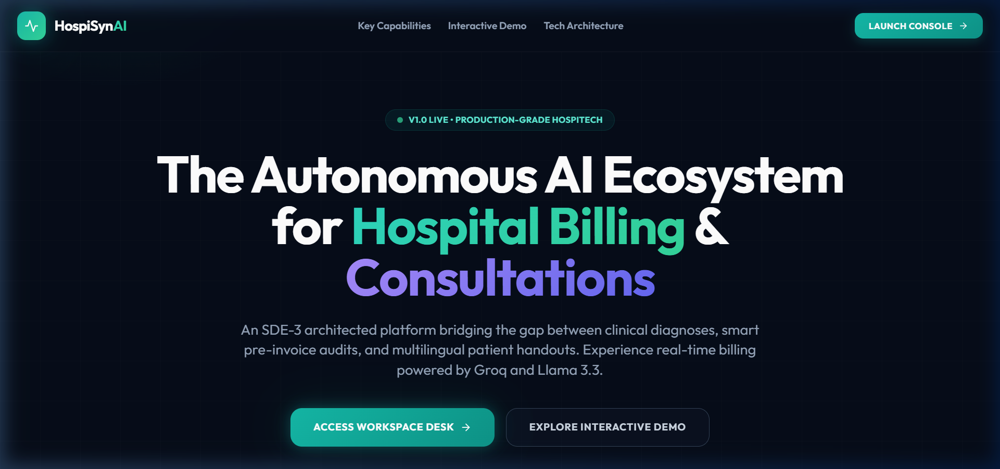
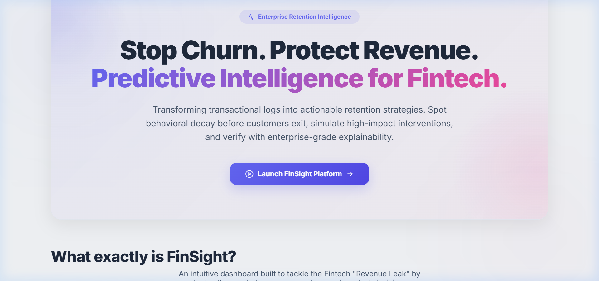
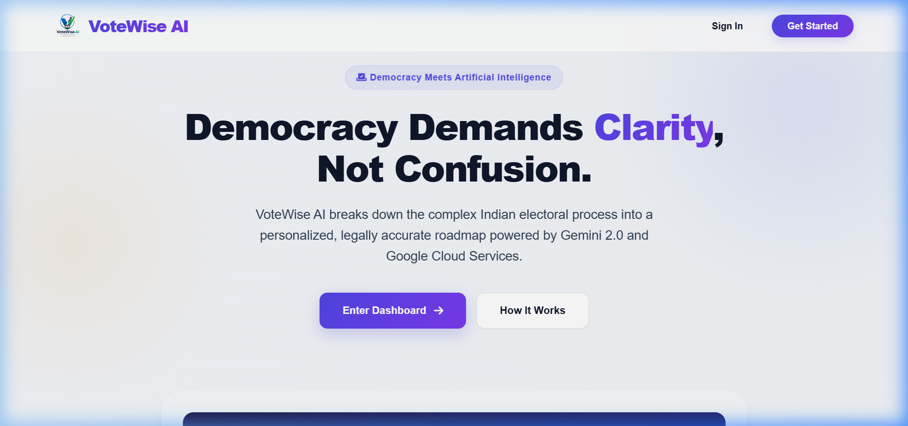
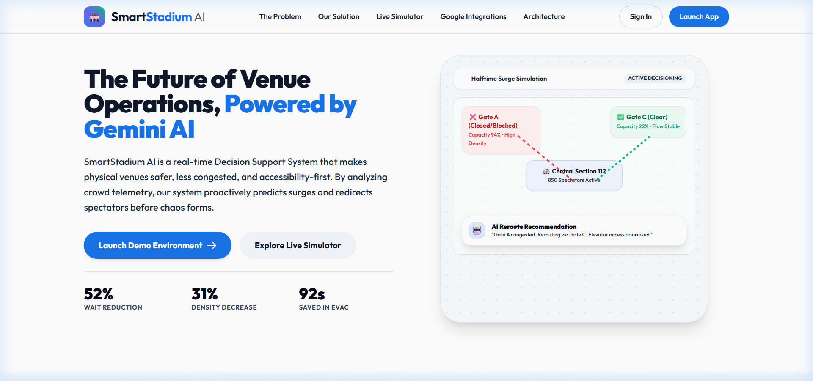
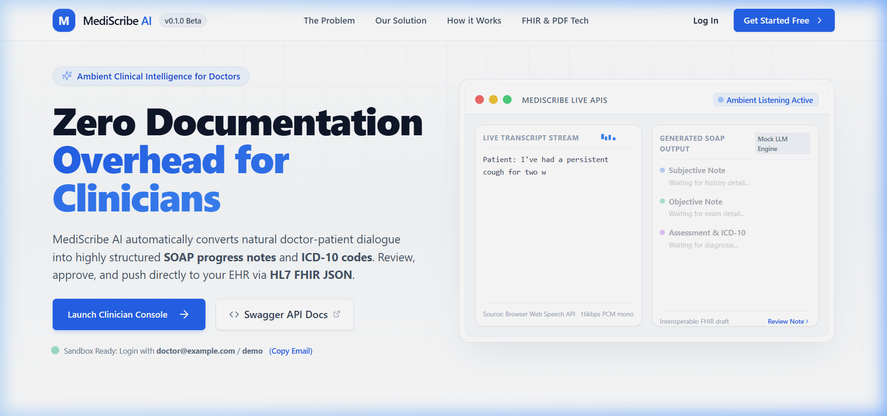
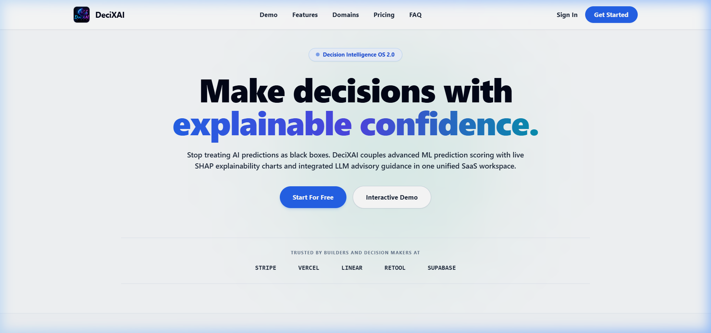
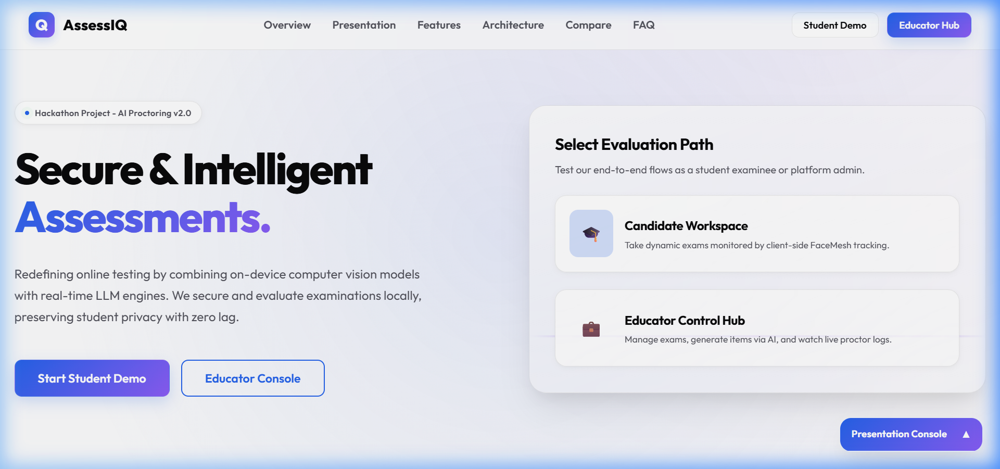
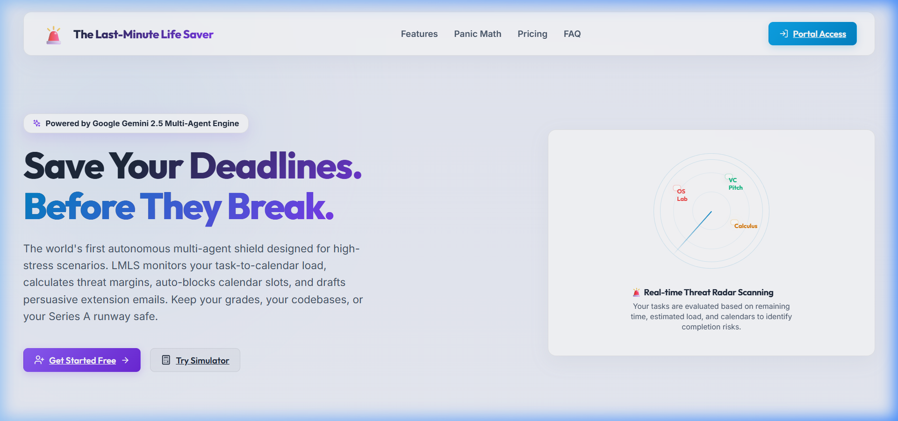

Hi, I am
Riyanshi Verma
Engineering Intelligence.
Optimizing Models.
I build and deploy advanced AI architectures, multi-agent orchestrations, and optimized retrieval networks designed for real-world impact.
Decentralizing Complexity
Translating advanced neural network research into robust, deployment-ready software systems.
Bridging AI Research & Enterprise Systems
AI Developer & 4th-year B.Tech CSE(DS) Student specializing in multi-agent orchestration, context-aware RAG pipelines, and production-grade LLM deployments. I build modular, low-latency systems that translate research into real-world impact — with minimal hallucination and maximum reliability.
class GenerativeDeveloper:
def __init__(self):
self.name = "Riyanshi Verma"
self.role = "AI Developer & 4th-year B.Tech CSE(DS) Student"
def core_belief(self):
return [
"RAG beats massive params",
"Strict agent checks",
"Quantized edge models"
]
agent = GenerativeDeveloper()
print(agent.core_belief())Education & Core Fields
Pursuing a rigorous curriculum focused on advanced algorithms, data structures, neural architectures, and big data systems engineering.
B.Tech in CSE (Data Science)
CGPA: 8.53Ecosystem Benchmarks & Achievements
Demonstrated competitive excellence in fast-paced AI validation challenges and hackathons globally.
Target Roles & Opportunities
I am eager to apply my academic knowledge and project-based experience. I am actively looking for internship, co-op, or entry-level opportunities in the following areas:
AI Developer / Generative AI Intern
Building agentic workflows, custom RAG pipelines, and LLM-powered applications.
Python Backend Engineer
Developing async microservices, database schemas, and robust backend APIs using FastAPI.
Data Scientist / ML Associate
Analyzing datasets, building predictive models, and running statistical evaluations.
Full-Stack Developer (AI Apps)
Connecting modern frontends (React) with optimized model inference servers.
Prompt Engineer / Agentic Workflows
Designing custom prompt chains, validation layers, and multi-agent systems.
System Experience
Chronological footprint of enterprise AI implementations, collaborative research, and credentials.
AI Intern
Infosys Springboard 7.0 Active
- Built CommAI: a multilingual content engine supporting 22 Indian languages using Groq Llama 3.3 — reducing manual campaign drafting time by ~70%.
- Integrated Groq API (Llama 3.3/3.1) to generate localized public campaigns with dynamic, responsive previews across device layouts.
- Developed an offline content compliance auditor that evaluates campaign drafts for shouting patterns, duplicate phrasing, and sensitive keywords — improving message quality before bulk broadcasts.
Generative AI Intern
Smart Internz & Google Cloud
- Successfully completed a virtual internship in Generative AI through Smart Internz in collaboration with Google Cloud, gaining hands-on experience with **Vertex AI** for building and deploying generative models.
Technical Matrix
Deep capability across the full vertical stack of model integration, deep learning pipelines, and backend MLOps infrastructure.
Agentic Orchestration
AdvancedBuilding autonomous agents that use planning, execution tools, and dynamic loops using LangChain, FastAPI, and custom orchestration logic.
RAG & Vector Databases
AdvancedDesigning low-latency semantic retrieval systems and civic guidance pipelines using Google Embeddings and SQLite3 in-memory caching.
LLM Integration & APIs
AdvancedOrchestrating foundational APIs (OpenAI, Claude, open-source Llama/Mistral) into production workflows with precise control.
Prompt Engineering & Eval
AdvancedStructuring system prompts, implementing output schemas, and validating model behavior using LangSmith and custom LLM-as-a-judge patterns.
NLP & Generative Content
IntermediateLeveraging Generative AI engines (Groq, Gemini) for semantic analysis, dynamic translation, and personalized content drafting.
Classical Machine Learning
AdvancedApplying traditional regressions, trees, clustering models, dimensionality reduction, and preprocessing workflows using Scikit-Learn.
Data Science & Analytics
IntermediateUtilizing Pandas, NumPy, and Streamlit for Exploratory Data Analysis (EDA) and translating raw data into actionable dashboards.
FastAPI & Backend APIs
AdvancedBuilding high-throughput, async RESTful APIs and streaming endpoints in Python to power real-time generative interfaces.
Docker & Containerization
IntermediatePackaging codebases and deep learning dependencies into isolated, reproducible, GPU-accessible container environments.
MLOps & Clouds
Hands-onManaging model monitoring, data lineage, evaluation runs, and container deployments across cloud services (AWS / GCP).
Languages & Frameworks
LLMs & Generative AI
Data & Machine Learning
Databases & Vector Stores
DevOps, Cloud & APIs
Systems Sandbox
Run live simulation traces of advanced retrieval, multi-agent coordination, and system guardrail pipelines.
Orchestration Dashboard
Select a pipeline simulation model to deploy on the node logs.
Showcase Deployments
A collection of custom architectures, agentic pipelines, and optimized systems built for production benchmarks.
HospiSynAI
Clinical notes are highly unstructured and manual billing audits lead to delayed patient handovers and leakage of hospital revenue.
A multi-agent AI pipeline containerized with Docker that dynamically translates raw clinical summaries into 11 regional languages while running a concurrent automated billing audit node.
Designed a concurrent asynchronous auditing route in FastAPI using background tasks to flag financial discrepancies without blocking patient handout compilation.

Case Study
Traditional clinical reporting is slow and error-prone, resulting in translation backlogs and high billing compliance risks.
Healthcare providers and administrative staff who require fast, localized summaries for patients and strict billing integrity.
Multi-agent setup deploying FastAPI routing, Neon PG databases, and Groq high-throughput Llama inference engines.
Built a background worker pipeline that runs transcription and translation tasks concurrently with a custom billing auditor.
Selected Llama-3.3-70B for its exceptional precision on complex clinical entity extraction and translation tasks compared to smaller models.
FinSight
Financial analyst teams lack actionable visual insights into UPI transaction behavior, causing missed opportunities for customized consumer products.
An explainable AI financial behavioral analysis platform featuring transaction uploads, RFM categorization, and a predictive 'what-if' modeling engine.
Implemented SHAP (SHapley Additive exPlanations) values client-side via custom Plotly graphs to clarify the factors driving transaction score fluctuations.

Case Study
Bulk transaction behavior patterns are complex and opaque, hiding valuable customer segment opportunities from decision-makers.
Financial product managers and risk auditors evaluating transaction behavior profiles.
FastAPI analytics pipeline integrating Scikit-Learn behavioral models and Groq consensus generation.
Constructed a behavioral modeling workspace that ingests raw banking records to produce actionable customer lifetime segment tiers.
Pre-computed RFM profiles locally to bypass LLM latency, utilizing the LLM only for advanced semantic explanation.
VoteWise-AI
Voters face misinformation and local routing confusion during local elections, leading to reduced voter turnout.
A civic-tech voting assistant powered by Gemini 2.0 Flash that handles multi-lingual queries and maps physical polling booth locations using Google Maps API.
Engineered a strict system-instruction prompt framework that achieved a 96.98% overall evaluation score (covering code quality, testing, accessibility, etc.) and eliminates political bias in LLM recommendations.

Case Study
Finding official polling booths and navigating conflicting election details is complex and error-prone.
Everyday citizens seeking unbiased voting details in local regional languages.
Gemini 2.0 Flash orchestrator integrating Google Maps Geocoding API and a localized static fact-checking database.
Developed an election-specific chatbot that delivers localized maps and verified non-partisan voting details.
Selected Gemini 2.0 Flash for its fast token output speed and highly accurate multilingual translation capability.
SmartStadium-AI
Stadium operators struggle to manage real-time crowds, power grids, and resources due to fragmented IoT telemetry.
A telemetry emulator modeling real-time edge sensors (crowd capacity, temperature, power) inside a stadium, utilizing containerized microservices.
Optimized the asynchronous mock IoT generator using Python asyncio to simulate over 50 concurrent sensors with less than 2% CPU overhead.

Case Study
Testing stadium operations systems is difficult due to the high cost of actual IoT hardware deployment.
Stadium facilities managers testing telemetry pipelines under high simulated load.
Asynchronous FastAPI edge node simulating data packet streams over Docker containerized infrastructure.
Created a fully dockerized stadium operations dashboard simulating realistic crowd and resource telemetry.
Implemented Uvicorn-optimized loop cycles for rapid telemetry generation over local TCP ports.
MediScribe-AI
Doctors spend up to 3 hours daily writing paper notes after patient consultations, increasing fatigue and billing inaccuracies.
An ambient clinical audio scribe app that listens to doctor-patient speech patterns, translates them to text, and summarizes details into structured EHR notes.
Built a client-side audio chunking pipeline that streams compressed audio buffers in real-time, preventing network timeouts.

Case Study
Doctors lose face-to-face time with patients due to high administrative typing requirements.
Clinical professionals conducting in-person or remote consultations.
TypeScript React frontend communicating with Whisper API transcription pipelines and clinical summary post-processors.
Formulated an ambient clinician assistant that automatically formats audio transcripts into clinical records.
Opted for local browser audio capture compression to minimize bandwidth usage on slow clinic connections.
DeciXAI
Business users reject machine learning recommendations due to lack of visibility into underlying model decision criteria.
An interactive model diagnostic platform that calculates feature importance and runs custom user hypothesis testing.
Built a custom decision tree path highlighter that extracts and visualizes decision rules in clear human language.

Case Study
Complex classification models act as black boxes, making them difficult for business teams to trust.
Analysts evaluating predictive models for deployment.
Python machine learning pipeline with modular diagnostic engines exporting JSON prediction paths.
Created a diagnostic visualization dashboard mapping complex feature weights to human-readable explanations.
Utilized Scikit-Learn tree metrics directly to compute local feature importance fast.
AssessIQ
Online exams are prone to cheating, but cloud-based video proctoring introduces high bandwidth costs and privacy concerns.
An AI examination dashboard with zero-latency client-side proctoring (face tracking, phone detection) running entirely in the browser.
Implemented edge proctoring using MediaPipe Face Mesh on the client side, sending only lightweight JSON alerts over WebSockets to save 99% bandwidth.

Case Study
Traditional remote exams require constant high-definition video streaming, causing platform drops for low-bandwidth students.
Universities and testing centers seeking lightweight, privacy-respecting test monitoring.
Client-side face tracker running inside a Vanilla JS/WebGL wrapper, with a FastAPI/SQLite backend logging socket events.
Engineered a decentralized proctoring system that flags exam violations without streaming raw video.
Selected TensorFlow.js coco-ssd over cloud vision APIs to enforce user privacy and eliminate server processing costs.
The Last-Minute Life Saver
Professionals suffer from task gridlock and missed deadlines due to static calendar schedules that fail to adapt to urgent changes.
An adaptive time-management dashboard that dynamically adjusts schedule queues and generates context-aware nudges.
Designed a heuristic queue scheduler that sorts tasks based on urgency-importance scores before feeding them to the Gemini API for optimization.

Case Study
Passive reminders are easily ignored, leading to work accumulation and deadline panic.
Remote workers and students managing multiple overlapping deadlines.
React application connected to Google AI Studio API for calendar orchestration and nudge formulation.
Developed an active time coordinator that restructures daily agendas based on task priority shifts.
Utilized standard local storage to cache tasks, ensuring full offline functionality and sub-millisecond loading.